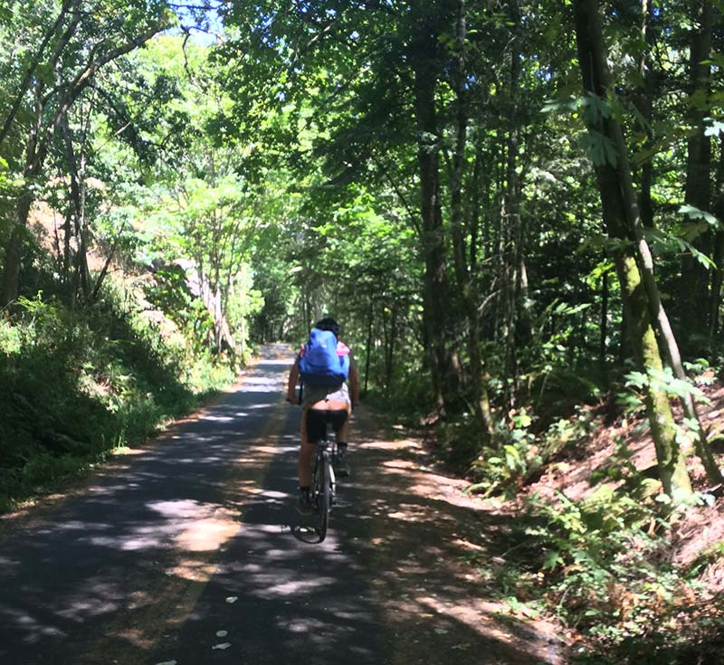
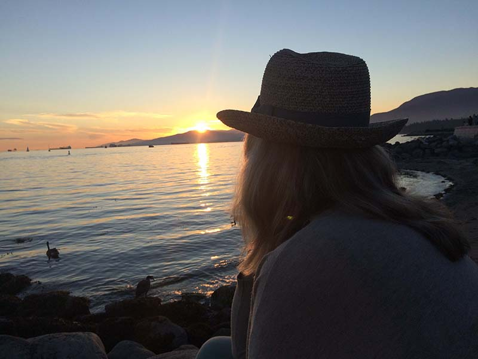
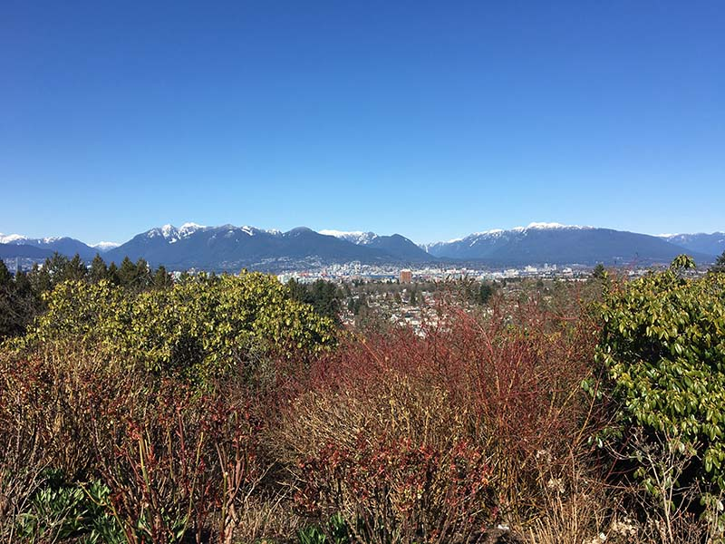
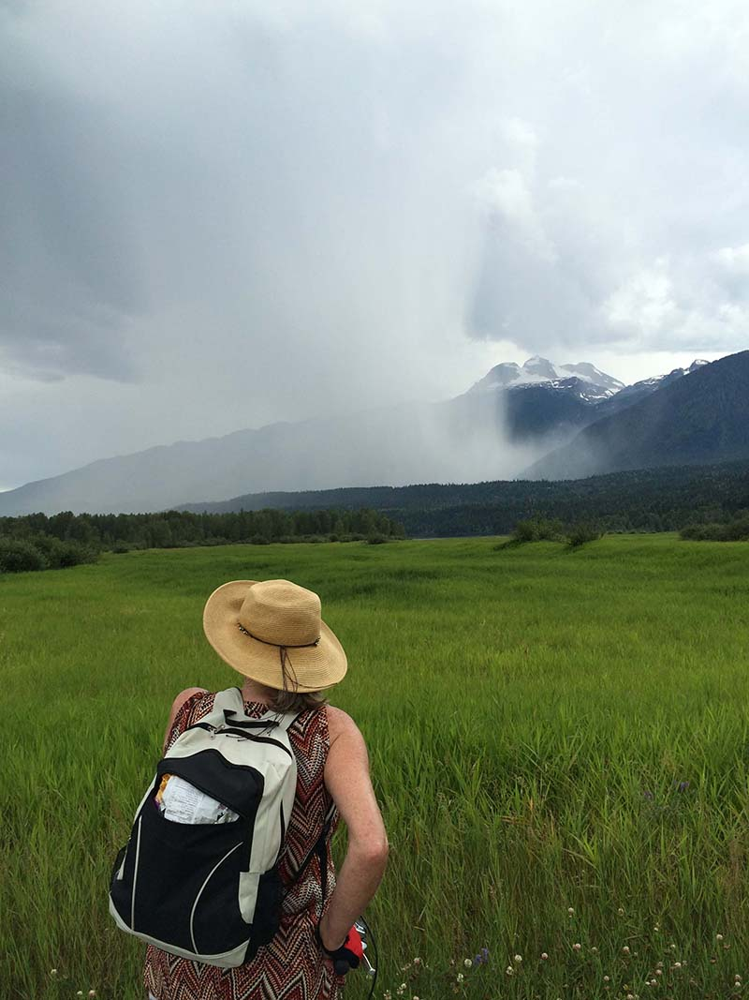
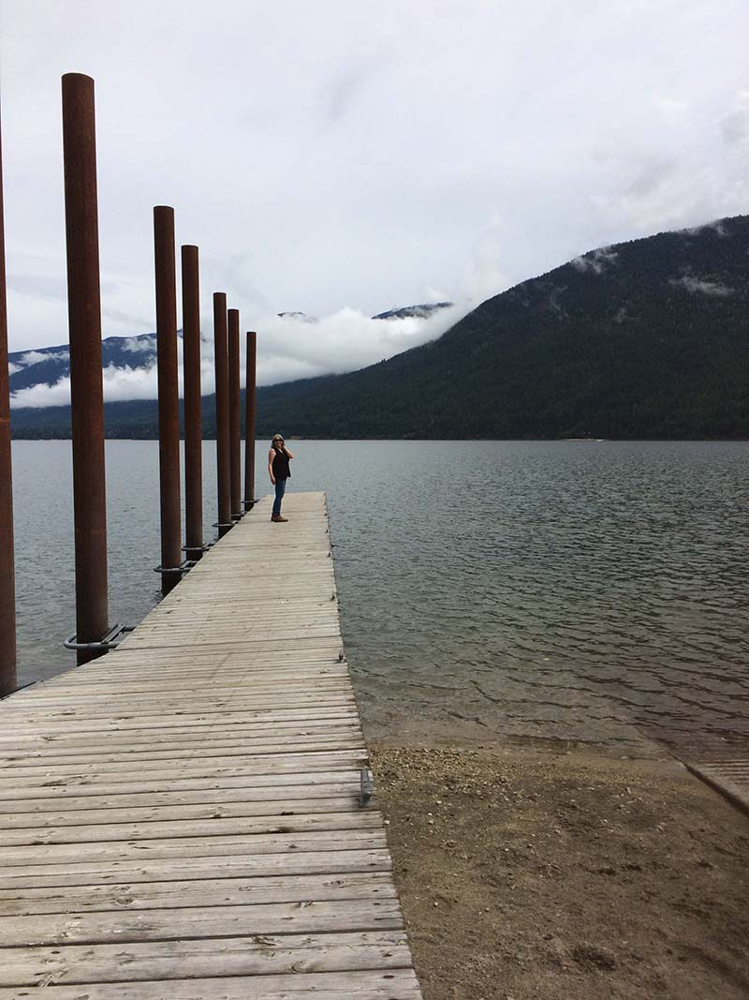

One thing that they seldom teach us in school is that your life will never follow some steadily upward
mobility path. That there will be highs and lows, ups and downs, there will be moving forwards occasionally
and then, more often, huge steps backwards.
I always felt that education was really important but after my mother married a very abusive step-father who
was relentlessly cruel to me, I quit school in grade 10 to escape to live in the country with my sister
and her husband, both who had dropped out of university to find something better, I guess.
We lived in a valley in B.C. that was populated by red-neck, rural mill workers to suddenly being inundated with Californian
draft dodging free spirits.

Living 'on the land' was where I learned how to be self-sustaining -
chopping wood for fires, canning, baking bread and even building a house for myself (with help!). For most of it
there was no electricity, our water ran direct from a creek and the closest grocery store was 45 miles away.
I lived there from the age of 16 to the age of 26.
I married another abusive man as is very common for someone with unresolved father issues. I did have two
beautiful children (midwife attended home births) with him before I finally hauled them and myself away from the marriage and headed back to my
mother and to a town that was still small and safe but also ... stores!
JOINING THE REAL WORLD
I found my life again, shed the hippy garb, put on a bra, some makeup, got a cheap orange Datsun and started
school again. While married I had managed a brief year where I went to college as a mature student so I continued
on this path. I took another year with Anatomy, Physiology, Biology, Microbiology and Psychology as my focus
and often got the top marks in each.
Because the college only had 2 year diploma programs and I didn't want to leave my extended family behind, I chose
the nursing program. Big mistake. It isn't a great idea to go from being a free-thinking hippy to being part of
an almost nunnery type of institution. I didn't like how the doctors were put on this pedestal. Their scrawly
careless prescription notes almost seemed like a guessing game for the nurses to deal with. Many, with their
rude and callous treatment of the nursing staff, encouraged that the toxicity was be passed on down the line.
I had a hard time with all of that and suffered from debilitating insomnia. My body was telling me to quit
but I didn't want to be a quitter.

One day a doctor walked into a room where I was with the patient. He stood there and abruptly told the patient in front
of his wife that he had terminal cancer. And walked out again. I stayed behind to do what I could to console them, even going to
the hospital library to find some literature for them to research the disease. In the end I couldn't sleep, couldn't
get along with the instructor and after almost 3 semesters, left the profession behind.
GOING CORPORATE
After meeting my current and forever husband while I was in nursing school, we moved to Vancouver to start fresh.
I went from nursing to taking computer programming diploma program at a local university, following the path that my new husband took.
This was when there was no Internet or cell communication
and we had to learn how to connect to bulletin boards using modems; learning programming languages that ran code on
the giant mainframes.

After graduating I started on the A's in
the phone-book and cold called myself into a job with a start-up. From there I moved up to bigger and more corporate
gigs until I had to take maternity leave to have my third baby with my new husband. Although I loved the intricacy of
coding (and the psychological safety of hiding within the logic)
I found the corporate world, specifically a world made up predominantly of men to be a continual, tedious
process of having to prove myself over and over.
I switched from employee to consultant as that was where the real money could be made. It also upped
the game. Being a consultant AND a female seemed to challenge the egos of many a co-worker and
manager. I played the game as well as I could, keeping the corporate face while crying occasionally in
the bathroom. The meetings, the endless meetings! The boredom mixed with intensity and huge pressure to
always produce was a strange mix.
BECOMING AN ENTREPRENEUR
After my baby was born, we both decided that we should join the software bubble and create our own e-commerce
websites. These were the days of drugs.com, pets.com and idonotknowwhattocreate.com. Michael and I spent over a
decade developing our own websites and
planning what to do with all the millions we would make. This was before Jeff Bezos took over the
world! While Michael worked as a consultant, I did the R&D - developing ideas into reality, learning,
failing, succeeding, getting ripped off, being led down the garden path by 'coaches' while creating some pretty great stuff.
We went all out with the marketing - we had beautiful brochures. We did all the correct SEO optimization
hiring those 'experts'. We had a Facebook page, a Twitter page and someone who updated them daily.

We bought print advertising, even radio ads. We hired PR people, we wrote press releases and talked to
the local morning show about featuring us. We hired data entry staff and sales staff and yes we did land customers.
But in the end, we were too small time, just another software company eaten up by the big guys.
It was that time away on a consulting job in Victoria, when we decided we just could not continue down that path. It
was like losing a loved one in a way. And there was a lot of grieving. Anyone, who has gone the
entrepreneurial path understands what I am saying.
MY PARADIGM SHIFT
My husband was still paying the bills working in Victoria and I would occasionally tag along for the week to enjoy the hotel pool,
workout room, sauna etc. I also enjoyed walking around this beautiful city with no plans or agenda.
It gave me time to think about a very much needed lifestyle change. I worked up my courage to initiate meetings
with a life counsellor and trained astrologer.
As we worked through a variety of issues she identified that I had strong 'healing' abilities. Intrigued,
I got a few books out about healing.

I took them home and left them on the shelf for a few months.
Eventually, I was drawn back to them. Some were too vague, some were too complex and intimidated me
- physics was never my strong suit. Some had interesting ideas but offered no real practical guidance. One by one I read and
abandoned them, feeling more confused.
That was until I picked up and actually opened Donna's
book, simply called 'Energy Medicine'. Inside this gem were real suggestions, exercises, routines,
and guides that actually helped with specific issues. I started to follow the Daily Energy Routine
and found over time, some of that lost feeling leaving me as I
entered
into Energy Medicine.